<!DOCTYPE html><html><head>
      <title>RTE</title>
      <meta charset="utf-8">
      <meta name="viewport" content="width=device-width, initial-scale=1.0">
      
      <link rel="stylesheet" href="file:///c:\Users\Yi\.vscode\extensions\shd101wyy.markdown-preview-enhanced-0.4.3\node_modules\@shd101wyy\mume\dependencies\katex\katex.min.css">
      
      

      
      
      
      
      
      

      <style>
      /**
 * prism.js Github theme based on GitHub's theme.
 * @author Sam Clarke
 */
code[class*="language-"],
pre[class*="language-"] {
  color: #333;
  background: none;
  font-family: Consolas, "Liberation Mono", Menlo, Courier, monospace;
  text-align: left;
  white-space: pre;
  word-spacing: normal;
  word-break: normal;
  word-wrap: normal;
  line-height: 1.4;

  -moz-tab-size: 8;
  -o-tab-size: 8;
  tab-size: 8;

  -webkit-hyphens: none;
  -moz-hyphens: none;
  -ms-hyphens: none;
  hyphens: none;
}

/* Code blocks */
pre[class*="language-"] {
  padding: .8em;
  overflow: auto;
  /* border: 1px solid #ddd; */
  border-radius: 3px;
  /* background: #fff; */
  background: #f5f5f5;
}

/* Inline code */
:not(pre) > code[class*="language-"] {
  padding: .1em;
  border-radius: .3em;
  white-space: normal;
  background: #f5f5f5;
}

.token.comment,
.token.blockquote {
  color: #969896;
}

.token.cdata {
  color: #183691;
}

.token.doctype,
.token.punctuation,
.token.variable,
.token.macro.property {
  color: #333;
}

.token.operator,
.token.important,
.token.keyword,
.token.rule,
.token.builtin {
  color: #a71d5d;
}

.token.string,
.token.url,
.token.regex,
.token.attr-value {
  color: #183691;
}

.token.property,
.token.number,
.token.boolean,
.token.entity,
.token.atrule,
.token.constant,
.token.symbol,
.token.command,
.token.code {
  color: #0086b3;
}

.token.tag,
.token.selector,
.token.prolog {
  color: #63a35c;
}

.token.function,
.token.namespace,
.token.pseudo-element,
.token.class,
.token.class-name,
.token.pseudo-class,
.token.id,
.token.url-reference .token.variable,
.token.attr-name {
  color: #795da3;
}

.token.entity {
  cursor: help;
}

.token.title,
.token.title .token.punctuation {
  font-weight: bold;
  color: #1d3e81;
}

.token.list {
  color: #ed6a43;
}

.token.inserted {
  background-color: #eaffea;
  color: #55a532;
}

.token.deleted {
  background-color: #ffecec;
  color: #bd2c00;
}

.token.bold {
  font-weight: bold;
}

.token.italic {
  font-style: italic;
}


/* JSON */
.language-json .token.property {
  color: #183691;
}

.language-markup .token.tag .token.punctuation {
  color: #333;
}

/* CSS */
code.language-css,
.language-css .token.function {
  color: #0086b3;
}

/* YAML */
.language-yaml .token.atrule {
  color: #63a35c;
}

code.language-yaml {
  color: #183691;
}

/* Ruby */
.language-ruby .token.function {
  color: #333;
}

/* Markdown */
.language-markdown .token.url {
  color: #795da3;
}

/* Makefile */
.language-makefile .token.symbol {
  color: #795da3;
}

.language-makefile .token.variable {
  color: #183691;
}

.language-makefile .token.builtin {
  color: #0086b3;
}

/* Bash */
.language-bash .token.keyword {
  color: #0086b3;
}

/* highlight */
pre[data-line] {
  position: relative;
  padding: 1em 0 1em 3em;
}
pre[data-line] .line-highlight-wrapper {
  position: absolute;
  top: 0;
  left: 0;
  background-color: transparent;
  display: block;
  width: 100%;
}

pre[data-line] .line-highlight {
  position: absolute;
  left: 0;
  right: 0;
  padding: inherit 0;
  margin-top: 1em;
  background: hsla(24, 20%, 50%,.08);
  background: linear-gradient(to right, hsla(24, 20%, 50%,.1) 70%, hsla(24, 20%, 50%,0));
  pointer-events: none;
  line-height: inherit;
  white-space: pre;
}

pre[data-line] .line-highlight:before, 
pre[data-line] .line-highlight[data-end]:after {
  content: attr(data-start);
  position: absolute;
  top: .4em;
  left: .6em;
  min-width: 1em;
  padding: 0 .5em;
  background-color: hsla(24, 20%, 50%,.4);
  color: hsl(24, 20%, 95%);
  font: bold 65%/1.5 sans-serif;
  text-align: center;
  vertical-align: .3em;
  border-radius: 999px;
  text-shadow: none;
  box-shadow: 0 1px white;
}

pre[data-line] .line-highlight[data-end]:after {
  content: attr(data-end);
  top: auto;
  bottom: .4em;
}html body{font-family:"Helvetica Neue",Helvetica,"Segoe UI",Arial,freesans,sans-serif;font-size:16px;line-height:1.6;color:#333;background-color:#fff;overflow:initial;box-sizing:border-box;word-wrap:break-word}html body>:first-child{margin-top:0}html body h1,html body h2,html body h3,html body h4,html body h5,html body h6{line-height:1.2;margin-top:1em;margin-bottom:16px;color:#000}html body h1{font-size:2.25em;font-weight:300;padding-bottom:.3em}html body h2{font-size:1.75em;font-weight:400;padding-bottom:.3em}html body h3{font-size:1.5em;font-weight:500}html body h4{font-size:1.25em;font-weight:600}html body h5{font-size:1.1em;font-weight:600}html body h6{font-size:1em;font-weight:600}html body h1,html body h2,html body h3,html body h4,html body h5{font-weight:600}html body h5{font-size:1em}html body h6{color:#5c5c5c}html body strong{color:#000}html body del{color:#5c5c5c}html body a:not([href]){color:inherit;text-decoration:none}html body a{color:#08c;text-decoration:none}html body a:hover{color:#00a3f5;text-decoration:none}html body img{max-width:100%}html body>p{margin-top:0;margin-bottom:16px;word-wrap:break-word}html body>ul,html body>ol{margin-bottom:16px}html body ul,html body ol{padding-left:2em}html body ul.no-list,html body ol.no-list{padding:0;list-style-type:none}html body ul ul,html body ul ol,html body ol ol,html body ol ul{margin-top:0;margin-bottom:0}html body li{margin-bottom:0}html body li.task-list-item{list-style:none}html body li>p{margin-top:0;margin-bottom:0}html body .task-list-item-checkbox{margin:0 .2em .25em -1.8em;vertical-align:middle}html body .task-list-item-checkbox:hover{cursor:pointer}html body blockquote{margin:16px 0;font-size:inherit;padding:0 15px;color:#5c5c5c;border-left:4px solid #d6d6d6}html body blockquote>:first-child{margin-top:0}html body blockquote>:last-child{margin-bottom:0}html body hr{height:4px;margin:32px 0;background-color:#d6d6d6;border:0 none}html body table{margin:10px 0 15px 0;border-collapse:collapse;border-spacing:0;display:block;width:100%;overflow:auto;word-break:normal;word-break:keep-all}html body table th{font-weight:bold;color:#000}html body table td,html body table th{border:1px solid #d6d6d6;padding:6px 13px}html body dl{padding:0}html body dl dt{padding:0;margin-top:16px;font-size:1em;font-style:italic;font-weight:bold}html body dl dd{padding:0 16px;margin-bottom:16px}html body code{font-family:Menlo,Monaco,Consolas,'Courier New',monospace;font-size:.85em !important;color:#000;background-color:#f0f0f0;border-radius:3px;padding:.2em 0}html body code::before,html body code::after{letter-spacing:-0.2em;content:"\00a0"}html body pre>code{padding:0;margin:0;font-size:.85em !important;word-break:normal;white-space:pre;background:transparent;border:0}html body .highlight{margin-bottom:16px}html body .highlight pre,html body pre{padding:1em;overflow:auto;font-size:.85em !important;line-height:1.45;border:#d6d6d6;border-radius:3px}html body .highlight pre{margin-bottom:0;word-break:normal}html body pre code,html body pre tt{display:inline;max-width:initial;padding:0;margin:0;overflow:initial;line-height:inherit;word-wrap:normal;background-color:transparent;border:0}html body pre code:before,html body pre tt:before,html body pre code:after,html body pre tt:after{content:normal}html body p,html body blockquote,html body ul,html body ol,html body dl,html body pre{margin-top:0;margin-bottom:16px}html body kbd{color:#000;border:1px solid #d6d6d6;border-bottom:2px solid #c7c7c7;padding:2px 4px;background-color:#f0f0f0;border-radius:3px}@media print{html body{background-color:#fff}html body h1,html body h2,html body h3,html body h4,html body h5,html body h6{color:#000;page-break-after:avoid}html body blockquote{color:#5c5c5c}html body pre{page-break-inside:avoid}html body table{display:table}html body img{display:block;max-width:100%;max-height:100%}html body pre,html body code{word-wrap:break-word;white-space:pre}}.markdown-preview{width:100%;height:100%;box-sizing:border-box}.markdown-preview .pagebreak,.markdown-preview .newpage{page-break-before:always}.markdown-preview pre.line-numbers{position:relative;padding-left:3.8em;counter-reset:linenumber}.markdown-preview pre.line-numbers>code{position:relative}.markdown-preview pre.line-numbers .line-numbers-rows{position:absolute;pointer-events:none;top:1em;font-size:100%;left:0;width:3em;letter-spacing:-1px;border-right:1px solid #999;-webkit-user-select:none;-moz-user-select:none;-ms-user-select:none;user-select:none}.markdown-preview pre.line-numbers .line-numbers-rows>span{pointer-events:none;display:block;counter-increment:linenumber}.markdown-preview pre.line-numbers .line-numbers-rows>span:before{content:counter(linenumber);color:#999;display:block;padding-right:.8em;text-align:right}.markdown-preview .mathjax-exps .MathJax_Display{text-align:center !important}.markdown-preview:not([for="preview"]) .code-chunk .btn-group{display:none}.markdown-preview:not([for="preview"]) .code-chunk .status{display:none}.markdown-preview:not([for="preview"]) .code-chunk .output-div{margin-bottom:16px}.scrollbar-style::-webkit-scrollbar{width:8px}.scrollbar-style::-webkit-scrollbar-track{border-radius:10px;background-color:transparent}.scrollbar-style::-webkit-scrollbar-thumb{border-radius:5px;background-color:rgba(150,150,150,0.66);border:4px solid rgba(150,150,150,0.66);background-clip:content-box}html body[for="html-export"]:not([data-presentation-mode]){position:relative;width:100%;height:100%;top:0;left:0;margin:0;padding:0;overflow:auto}html body[for="html-export"]:not([data-presentation-mode]) .markdown-preview{position:relative;top:0}@media screen and (min-width:914px){html body[for="html-export"]:not([data-presentation-mode]) .markdown-preview{padding:2em calc(50% - 457px + 2em)}}@media screen and (max-width:914px){html body[for="html-export"]:not([data-presentation-mode]) .markdown-preview{padding:2em}}@media screen and (max-width:450px){html body[for="html-export"]:not([data-presentation-mode]) .markdown-preview{font-size:14px !important;padding:1em}}@media print{html body[for="html-export"]:not([data-presentation-mode]) #sidebar-toc-btn{display:none}}html body[for="html-export"]:not([data-presentation-mode]) #sidebar-toc-btn{position:fixed;bottom:8px;left:8px;font-size:28px;cursor:pointer;color:inherit;z-index:99;width:32px;text-align:center;opacity:.4}html body[for="html-export"]:not([data-presentation-mode])[html-show-sidebar-toc] #sidebar-toc-btn{opacity:1}html body[for="html-export"]:not([data-presentation-mode])[html-show-sidebar-toc] .md-sidebar-toc{position:fixed;top:0;left:0;width:300px;height:100%;padding:32px 0 48px 0;font-size:14px;box-shadow:0 0 4px rgba(150,150,150,0.33);box-sizing:border-box;overflow:auto;background-color:inherit}html body[for="html-export"]:not([data-presentation-mode])[html-show-sidebar-toc] .md-sidebar-toc::-webkit-scrollbar{width:8px}html body[for="html-export"]:not([data-presentation-mode])[html-show-sidebar-toc] .md-sidebar-toc::-webkit-scrollbar-track{border-radius:10px;background-color:transparent}html body[for="html-export"]:not([data-presentation-mode])[html-show-sidebar-toc] .md-sidebar-toc::-webkit-scrollbar-thumb{border-radius:5px;background-color:rgba(150,150,150,0.66);border:4px solid rgba(150,150,150,0.66);background-clip:content-box}html body[for="html-export"]:not([data-presentation-mode])[html-show-sidebar-toc] .md-sidebar-toc a{text-decoration:none}html body[for="html-export"]:not([data-presentation-mode])[html-show-sidebar-toc] .md-sidebar-toc ul{padding:0 1.6em;margin-top:.8em}html body[for="html-export"]:not([data-presentation-mode])[html-show-sidebar-toc] .md-sidebar-toc li{margin-bottom:.8em}html body[for="html-export"]:not([data-presentation-mode])[html-show-sidebar-toc] .md-sidebar-toc ul{list-style-type:none}html body[for="html-export"]:not([data-presentation-mode])[html-show-sidebar-toc] .markdown-preview{left:300px;width:calc(100% -  300px);padding:2em calc(50% - 457px -  150px);margin:0;box-sizing:border-box}@media screen and (max-width:1274px){html body[for="html-export"]:not([data-presentation-mode])[html-show-sidebar-toc] .markdown-preview{padding:2em}}@media screen and (max-width:450px){html body[for="html-export"]:not([data-presentation-mode])[html-show-sidebar-toc] .markdown-preview{width:100%}}html body[for="html-export"]:not([data-presentation-mode]):not([html-show-sidebar-toc]) .markdown-preview{left:50%;transform:translateX(-50%)}html body[for="html-export"]:not([data-presentation-mode]):not([html-show-sidebar-toc]) .md-sidebar-toc{display:none}
/* Please visit the URL below for more information: */
/*   https://shd101wyy.github.io/markdown-preview-enhanced/#/customize-css */

      </style>
    </head>
    <body for="html-export">
      <div class="mume markdown-preview  ">
      <h1 class="mume-header" id="autosar-runtime-environment-and-virtual-function-bus">AUTOSAR Runtime Environment and Virtual Function Bus</h1>

<h2 class="mume-header" id="1-introdution">1. Introdution</h2>

<p>Cooperate on srandards, compete on implementations</p>
<h2 class="mume-header" id="2-fundamentals">2. Fundamentals</h2>

<p>Adapt to different hardware platforms</p>
<ul>
<li>modularization (different independent components)</li>
<li>different layers of abstraction</li>
</ul>
<h3 class="mume-header" id="21-virtual-function-bus">2.1 Virtual Function Bus</h3>

<p>a system modeling and communication concept<br>
virual communication service<br>
mapped ti acutal impelemented methods specific for the underlying hardware infrastructure</p>
<h3 class="mume-header" id="22-runtime-environment">2.2 Runtime Environment</h3>

<p>runtime environment provides an actual representation of the virtual concepts of the VFB for one specic ECU<br>
RTE realizes the interfaces of the Virtual Function Bus<br>
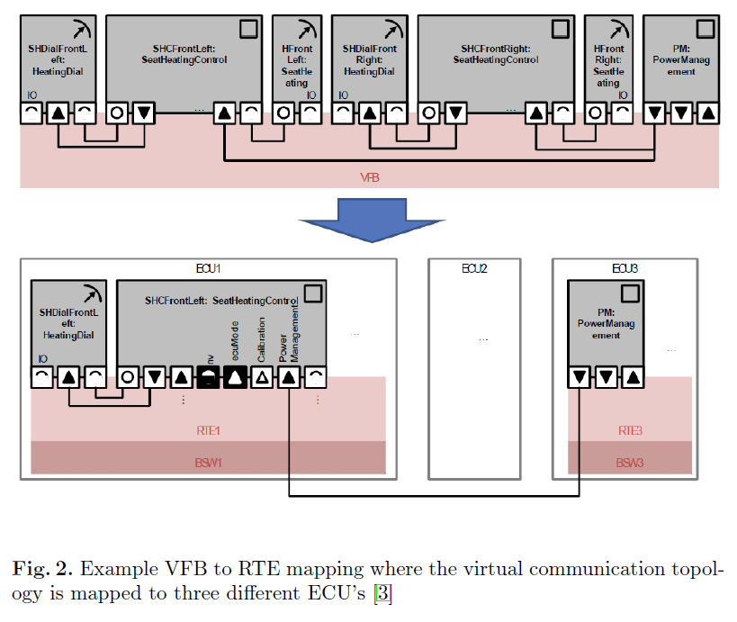</p>
<h3 class="mume-header" id="23-comparison-of-vfb-and-rte">2.3 Comparison of VFB and RTE</h3>

<p>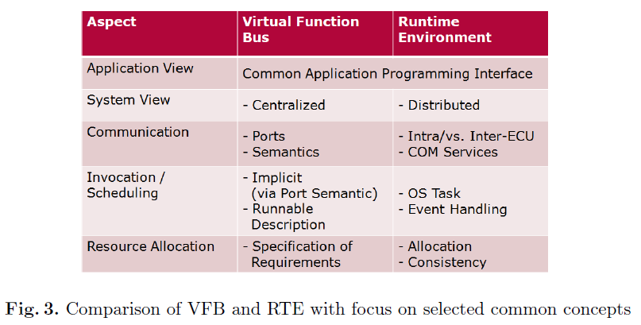</p>
<h2 class="mume-header" id="3-responsbilities-of-the-runtime-environment">3. Responsbilities of the Runtime Environment</h2>

<h3 class="mume-header" id="31-overview">3.1 Overview</h3>

<p>Interfaces:</p>
<ul>
<li>AUTOSAR Interface<br>
SWC components as well as ECU Abstraction and Complex Device Drivers</li>
<li>Standardized AUTOSAR Interface<br>
AUTOSAR services that have a predened and standardized functionality.</li>
<li>Standardized Interface<br>
Interfaces can not be described using the VFB specification<br>
used by the RTE only, cannot be used directly by other softwarecomponents<br>
e.g. OS has to provide a standardized interface to allow the RTEto consume services like component instantiation or taskscheduling which must not be used by other software components<br>
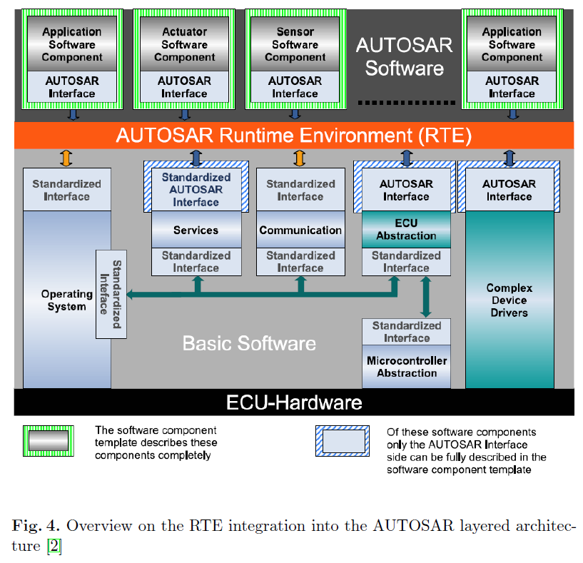</li>
</ul>
<h3 class="mume-header" id="32-autosar-software-components">3.2 AUTOSAR Software Components</h3>

<p>information has to be provided within the Software Component Template and serves as input for the RTE generation</p>
<ul>
<li>Hierarchical Structure: the composition of atomic software components, will be used by the RTE to create the required<br>
instances</li>
<li>Ports and Interfaces: provided and required ports and their communication semantics</li>
<li>Internal Behaviour: Runnable Entities and RTE Events for the purpose<br>
of scheduling and method invocation</li>
<li>Specifics of the Implementation: memory consumption, execution<br>
timesa</li>
</ul>
<h3 class="mume-header" id="33-autosar-services">3.3 AUTOSAR Services</h3>

<p>logical entity of basic software offering general functionality to be used by AUTOSAR Software Components</p>
<ul>
<li>part of the BSW</li>
<li>attached to the RTE using standarized AUTOSAR interface<br>
the RTE does not provide any mechanisms to access a service from a remote ECU.<br>
a service-to-service communication is not allowed by the AUTOSAR specication</li>
</ul>
<h3 class="mume-header" id="34-hardwar-related-components">3.4 Hardwar-Related Components</h3>

<p>ECU abstraction layer to decouple software from hardware.<br>
AUTOSAR interface<br>
But only can be accessed by suitable Sensor/Actuator software components</p>
<h2 class="mume-header" id="4-runnabels">4. Runnabels</h2>

<p>Sequence of instructions that can be started by the RTE</p>
<p>a mapping between operating system tasks and existing runnables is created that is later used by the RTE to define and perform scheduling and execution of the runnables according to their specication.</p>
<ul>
<li>Type 1 Runnables terminate within a finite time, mapped to basic tasks</li>
<li>Type 2 Runnables contains at least one wait point, mapped to extended tasks</li>
</ul>
<h3 class="mume-header" id="41-integration">4.1 Integration</h3>

<ul>
<li>Operating System View<br>
OS does not know about the concepts of runnables<br>
executed anytime the corresponding OS task is scheduled</li>
<li>RTE View<br>
Task is structured and controlled using RTE glue code that will control the correct execution of the runnables</li>
<li>VFB View<br>
during design time of the application, do not conern the integration context of runnables<br>
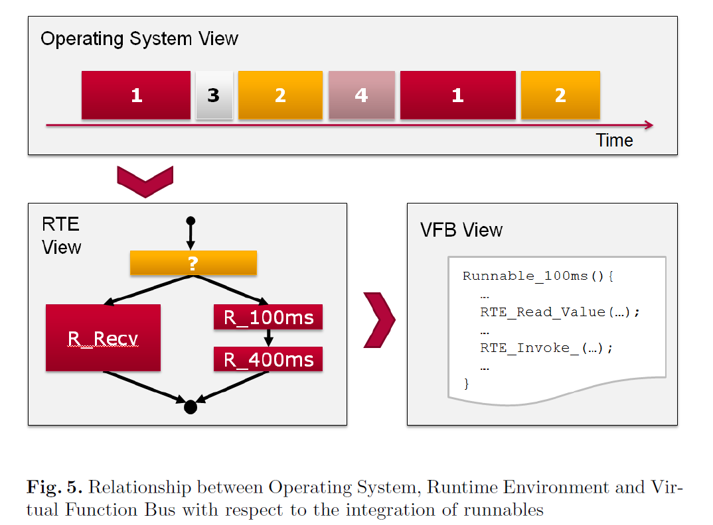<br>
In RTE view, yellow block indicates RTE glue codes, red blocks indicate runnables</li>
</ul>
<h3 class="mume-header" id="42-rte-events">4.2 RTE Events</h3>

<p>to activate or wake up runnables</p>
<ul>
<li>Activation<br>
invocation of a runnable instance</li>
<li>Wake Up<br>
Wait by blocking methods: RTE_Receive() or RTE_Feedback()<br>
Return/Wake up by RTE events</li>
</ul>
<p>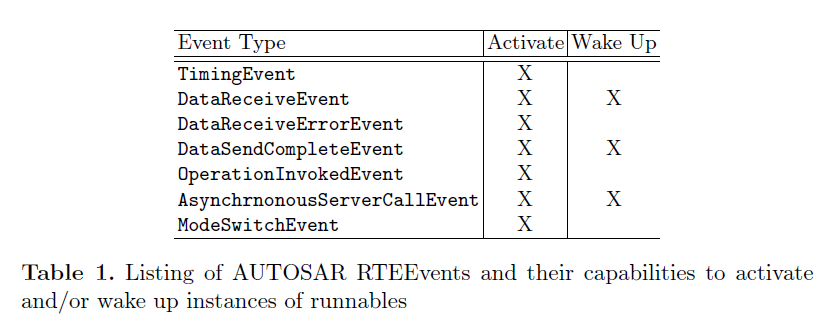</p>
<h3 class="mume-header" id="43-operating-system-task-mapping">4.3 Operating System Task Mapping</h3>

<ul>
<li>Scenario 1<br>
a single type 1 runnable</li>
<li>Scenario 2<br>
sequential execution of several type 1 runnables that share a common cycle time</li>
<li>Scenario 3<br>
continuously checking for RTE Event to decide which of the two category 1 runnables need to be executed</li>
<li>Scenario 4<br>
type 2 runnable is generally integrated as a standalone runnable in a single extended OS task<br>
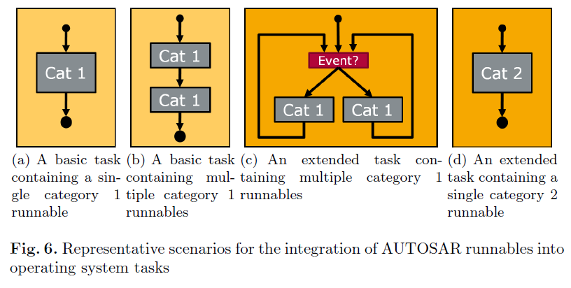</li>
</ul>
<h2 class="mume-header" id="5-rte-implementation">5. RTE Implementation</h2>

<p>Communication Patterns:</p>
<ul>
<li>Sender-Receiver</li>
<li>Client-Server<br>
Below using the example of the Sender-Receiver pattern</li>
</ul>
<h3 class="mume-header" id="51-fundamentals">5.1 Fundamentals</h3>

<p>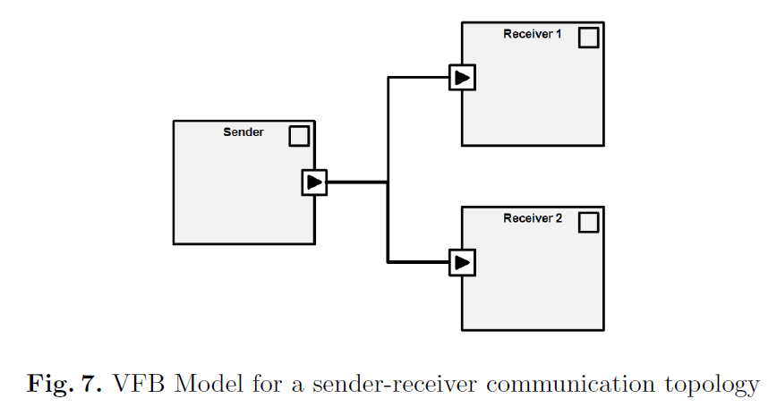<br>
VFB model does not consider the acutal location of the software components</p>
<h3 class="mume-header" id="52-sendreceive-modes">5.2 Send/Receive Modes</h3>

<p>four different modes of data receive:</p>
<ul>
<li>Implicit Receive<br>
provides only a copy of the respective value to the calling instance</li>
<li>Explicit Receive<br>
provides a non-blocking read operation on the actual variable containing the latest valid value</li>
<li>Wake up of wait point<br>
to wake up the component if the receive operation has completed successfully</li>
<li>Activation of runnable entity<br>
is used for runnables that wish to be invoked upon a new DataReceiveEvent and can then choose to either invoke implicit or explicit receive operations to actually retrieve the new value.</li>
</ul>
<p>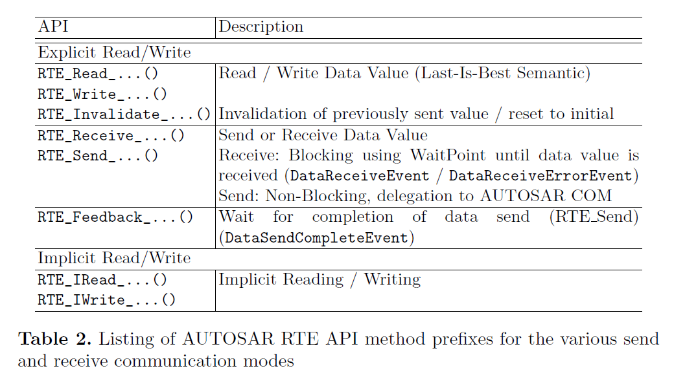</p>
<h3 class="mume-header" id="53-implementation">5.3 Implementation</h3>

<h4 class="mume-header" id="531-api-usage">5.3.1 API usage</h4>

<p>e.g. a receive port named PassengerDetected that provides a single value called val could be read via the RTE API call RTE_Read_PassengerDetected_val() for instance.</p>
<p>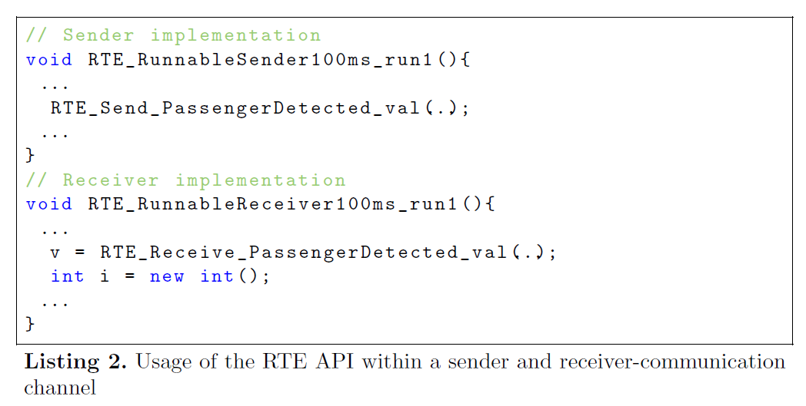</p>
<h4 class="mume-header" id="532-sender-implementation">5.3.2 Sender Implementation</h4>

<ul>
<li>Intra-ECU<br>
a simple write statement to a variable in a shared memory location</li>
<li>Inter-ECU<br>
Need consume a communication service object<br>
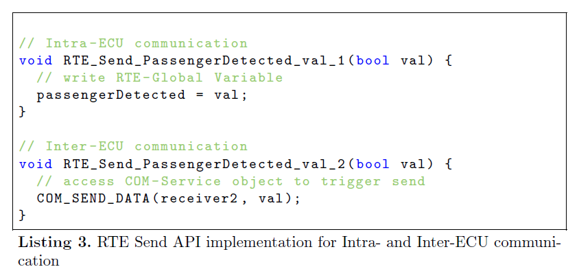</li>
</ul>
<h4 class="mume-header" id="533-receiver-implementation">5.3.3 Receiver Implementation</h4>

<p>Describe in Table 2 above<br>
Examples</p>
<ul>
<li>Case 1:<br>
explicit reading in an intra-ECU communication<br>
directly reads the local variable that contains the most recent value on the incoming port</li>
<li>Case 2:<br>
Intra-ECU communication scenario<br>
using a blocking API RTE_Receive() that additionally implements a queue for incoming values<br>
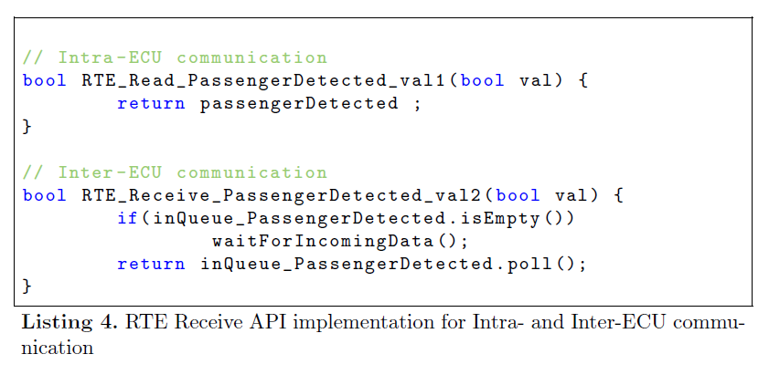</li>
</ul>
<h2 class="mume-header" id="6-hardware-interaction">6. Hardware Interaction</h2>

<h3 class="mume-header" id="61-ecu-abstraction">6.1 ECU Abstraction</h3>

<ul>
<li>provides a unified interface</li>
<li>closely coupled to the MCAL, which is hardware specific</li>
<li>MCAL provides access to Digital I/O, Analog/Digital Converter, FLASH, EEPROM</li>
</ul>
<p>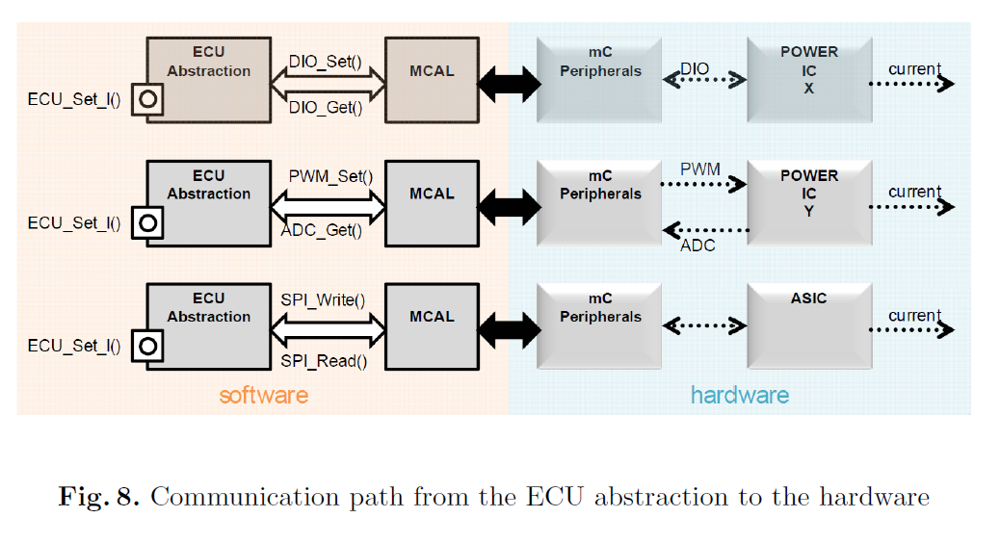</p>
<h3 class="mume-header" id="62-sensors-and-actuators">6.2 Sensors and Actuators</h3>

<ul>
<li>Sensor and Actuator Hardware can only be accessed using the interfaces provided by the ECU abstraction</li>
<li>Only sensor and sctuator software components can access them</li>
</ul>
<h3 class="mume-header" id="63-complex-device-drivers">6.3 Complex Device Drivers</h3>

<ul>
<li>bypass that hardware restriction for resource critical and/or Non-AUTOSAR compliant software components</li>
<li>usually for complex sensor or actuator drivers</li>
</ul>
<h3 class="mume-header" id="64-architectural-benefits">6.4 Architectural Benefits</h3>

<ul>
<li>relocatability of AUTOSAR software components</li>
<li>allow to develop components of each layer independently</li>
<li>interchange components without affecting components from the layers above</li>
</ul>

      </div>
      
      
    
    
    
    
    
    
    
    
  
    </body></html>